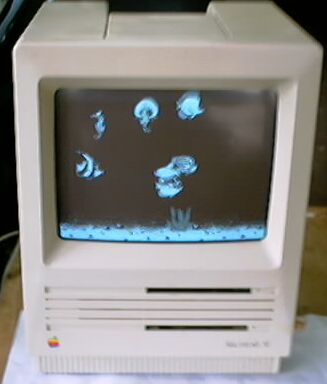
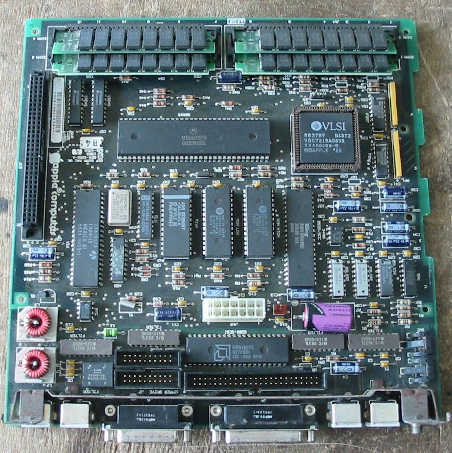
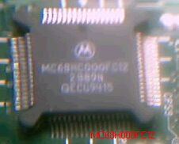
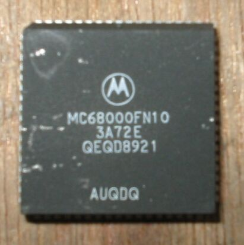

このSEについて

このSEを手に入れる前、Classicを持っていました。そのClassicも「起動しません」 と表示され５千円で売られていたものです。持ち帰ってみると、難なく起動し、遅い
ながらもちゃんと動きました。そのころ、会社の机の上のデスクトップ型のパソコン が、ノートパソコンに取り替えられ、何となくスペースができたしまったので、
Classicを、持ってきて飾り（場所ふさぎ？）に置いてみました。そのうち。これ いいですねという人が現れて、差し上げてしまいました。
次に買ったのがSEで、秋葉原の有名なジャンク屋で1980円でした。裏側の銘板には MacintoshSE 1Mbyte ,Two 800K
Drives Apple Computer,IncCupert Inc, Cupertino, California Made in USA
Model No.M5010 と書かれています。 仕様は、
・800K FD ２台
・RAM 1MB
・HD SCSI 80MB
もちろん保証なしで、現状渡しと言うことでした。持ち帰って電源を入れると OS6.0.8が問題なく起動しました。FDのスロットのうち、一つはセロテープで
塞いであり、気になったので、テープを剥がしてディスクを入れてみると、 取り出しができなくなり、無理に取り出すと、ディスクが壊れてしまいました。
だから、塞いでであったのですね。 このFDは取り外していまい、もう一度テープでしっかり塞ぎました。ケースを開けた ついでに、RAMを1MBから4MBに増設しました、付いていた256KBの30PinSIMMを取り外し、
代わりの1MB４枚を取り付けます。そして、設定を変更するために、R35、R36という 147.5オームの抵抗器を取り去ります。4MBあればKT7.1が動きます。
SEのロジックボード

搭載されているCPUはMC68000P8、電池は半田付けです。
68000について

MacintoshSEのCPUは、MC68000/8です。このCPUは、SEのほか、Plus、Classic、Portable、 などにも使用されています。先日、富士通のM2511A4Pという、古いMOを、修理しようとして
いたとき、ロジック基盤上に、MC68H000FC12を見付けました。写真はピント合わせが難しく、 よく写っていませんが、ＳＥに使われているような、DIPパッケージではなく、68030でよく
見られるような、QFPパッケージです。
68000は非常に古い、第１世代の68KCPUですが、生産されなくなったわけではなく、パソコン 以外の用途で使われ続けており、MOTOROLAのホームページを見ると、1000個当たりの単価が
載っていたりします。以前、某社のプリンタを分解したら、中に、８ビットCPUのベストセラー であった、Z80が入っていたこともありました。家電品の中からも、面白いCPUが見つかるかも
しれませんよ。（2002/09/05記）
68000をもう１個みつけました

MC68000FN10です。どこから出てきたかは、忘れました。(2004/07/01 記)
68Kマッキントッシュのページに戻る